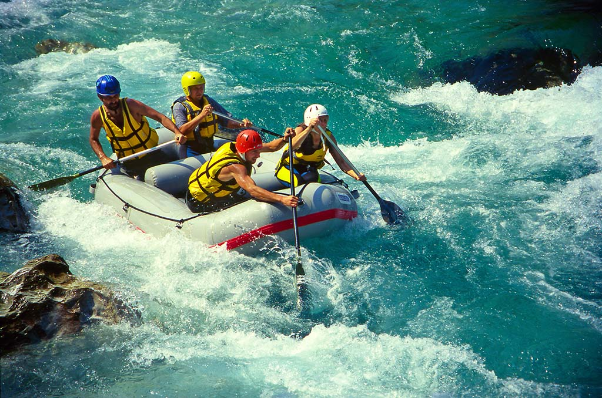
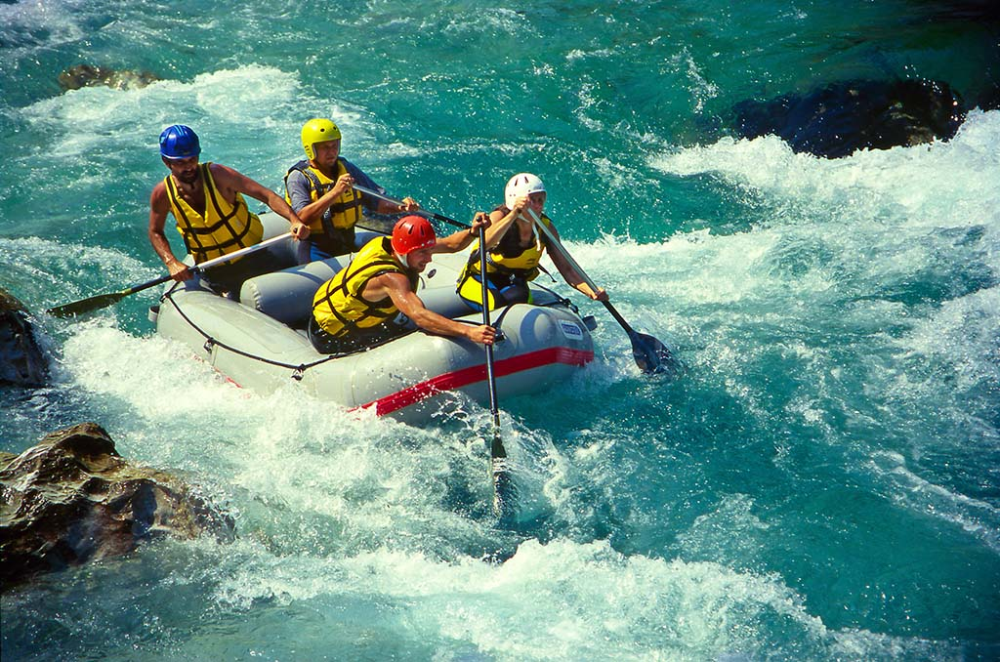

Easy
Intermediate
Hard
Intense
Our one of a kind tailored experience is here to give you that rush of adrenalin you crave at your experience and comfort level. With four different routes to choose from you get to build your own adventure. We have relaxing and Intermediate for new riders. And for those looking for an extra thirst for adventure you can choose our HARD or INTENSE course.